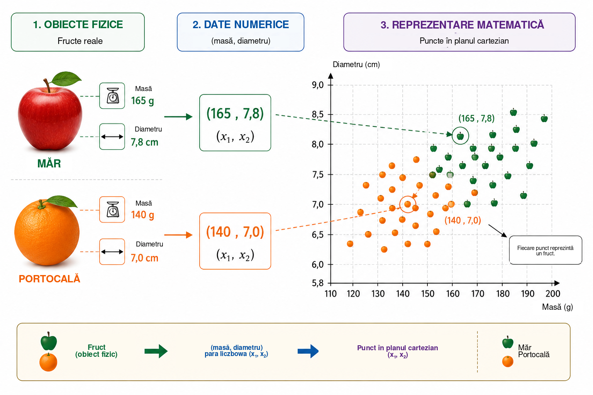
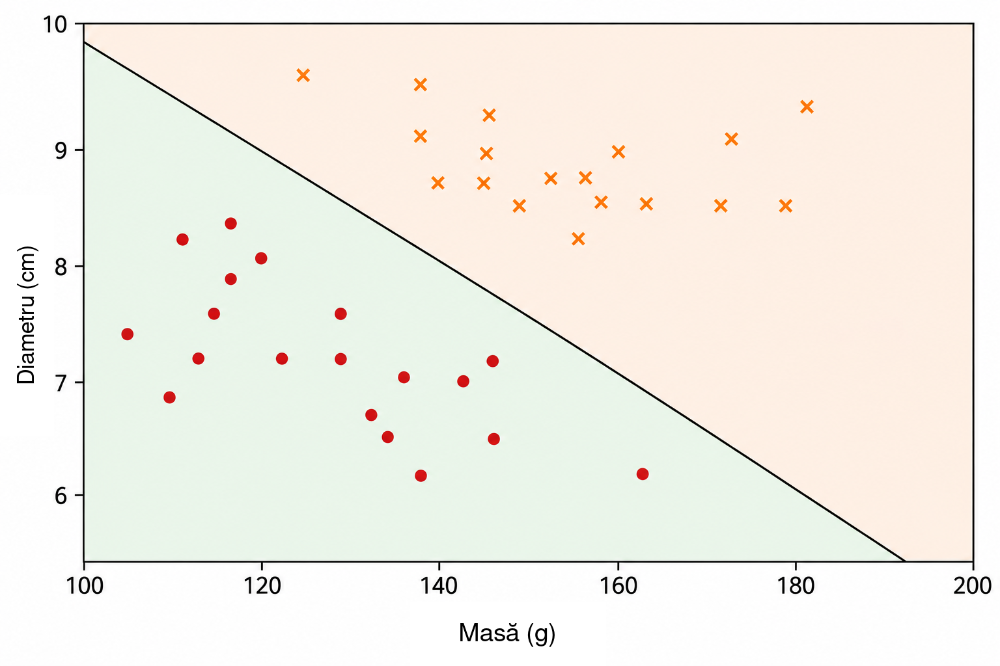
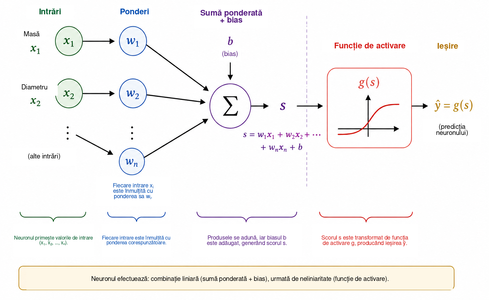
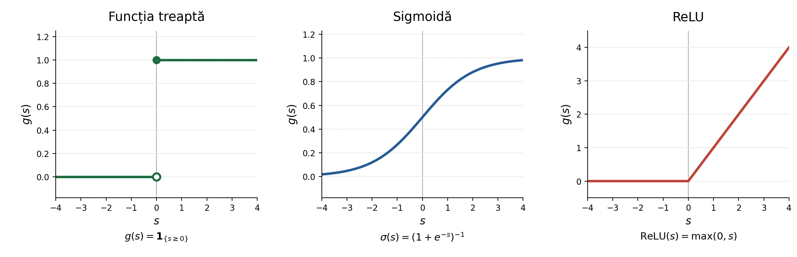
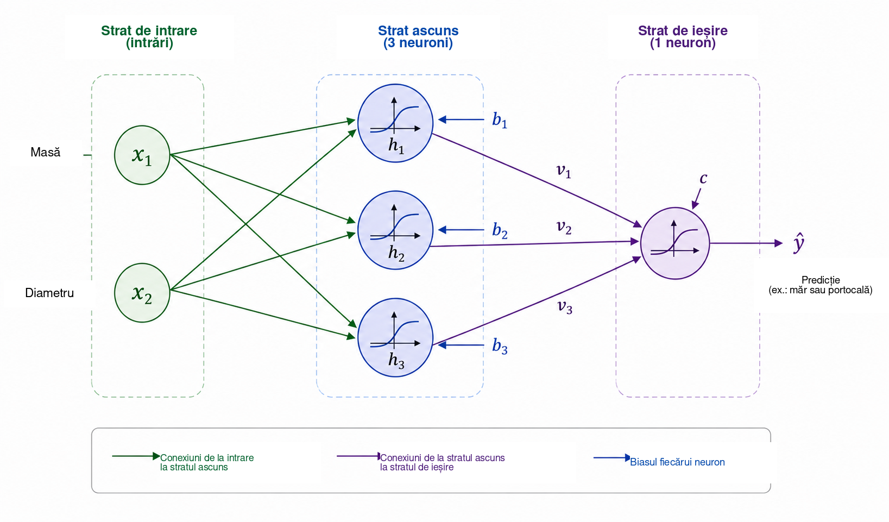
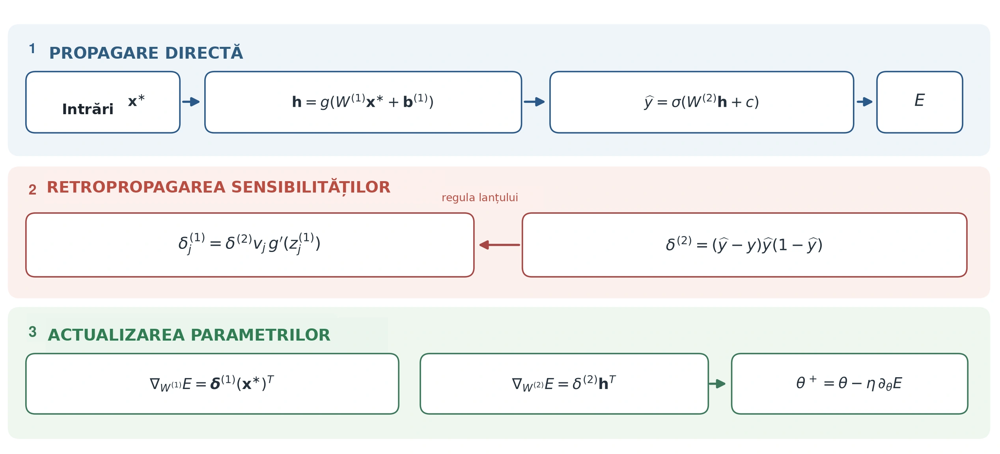
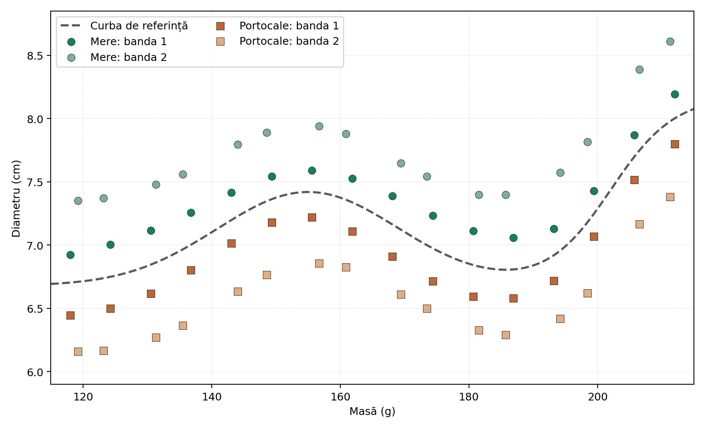
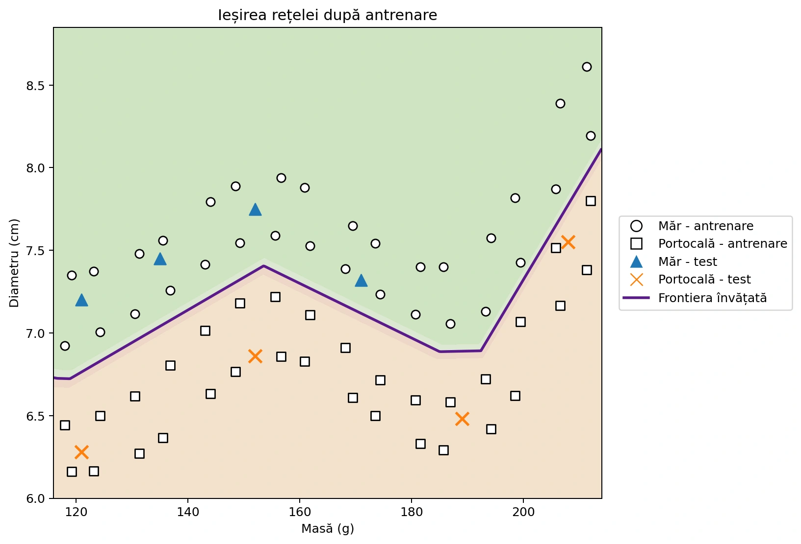

Când poate învăța un calculator?
În viața de zi cu zi luăm decizii de clasificare aproape fără să ne dăm seama. Privind un fruct, îl recunoaștem rapid ca fiind un măr sau o portocală; când primim un mesaj pe telefon, distingem o conversație legitimă de publicitatea nedorită; într-o analiză medicală, mai multe măsurători pot fi combinate pentru a sprijini o decizie; iar în instituțiile financiare sunt evaluate mai multe informații înainte de acordarea unui credit. În toate aceste exemple, mai multe caracteristici sunt analizate împreună pentru a produce un răspuns.
În multe programe de calculator tradiționale, regulile care produc acest răspuns sunt scrise explicit de programator. Această abordare funcționează bine atunci când regulile sunt cunoscute și pot fi formulate clar. Ea devine mai puțin eficientă atunci când datele sunt foarte variabile sau când este dificil să formulăm în prealabil toate condițiile necesare pentru o decizie bună. De aici apare o întrebare firească:
Putem construi un program care să învețe o regulă de decizie din exemple, în loc să primească regula dinainte?
Aceasta este una dintre ideile centrale ale învățării automate (machine learning), domeniu al inteligenței artificiale care studiază metode de ajustare a modelelor pe baza datelor . Într-o problemă de învățare supervizată, algoritmul primește exemple împreună cu răspunsurile lor corecte, iar noi căutăm un model care să poată produce predicții utile și pentru cazuri care nu au fost folosite în timpul antrenării. Dintre numeroasele modele dezvoltate în acest scop, rețelele neuronale artificiale au devenit importante în aplicații precum recunoașterea imaginilor, prelucrarea limbajului, analiza semnalelor și predicția seriilor temporale .
Utilizarea rețelelor neuronale ca punte între matematică, calcul și educația școlară a fost deja discutată în Professor de Matemática Online de Batista și Martins , care prezintă o activitate ce implică formarea profesorilor, Python și recunoașterea cifrelor. Articolul de față urmează o cale complementară. Obiectivul nostru principal este să dezvăluim matematica din interiorul unei rețele neuronale mici, pornind de la geometria analitică și ajungând, pas cu pas, la calculul gradientului și la o implementare manuală a retropropagării.
În pofida sofisticării aplicațiilor moderne, nucleul matematic al unei rețele neuronale poate fi introdus folosind idei relativ familiare. La nivel de bază, o rețea neuronală este o compunere de funcții ale căror parametri sunt ajustați pe baza datelor. Pornim de la o problemă geometrică simplă, reinterpretăm o dreaptă de separare ca neuron artificial, conectăm mai mulți neuroni, studiem rolul funcțiilor de activare și arătăm cum derivatele pot fi utilizate pentru ajustarea automată a parametrilor rețelei. Apoi implementăm în Python un exemplu complet de mici dimensiuni, păstrând o corespondență directă între ecuații și cod.
Reprezentarea matematică a problemei
Pentru a înțelege cum funcționează o rețea neuronală, începem cu o problemă deliberat simplă: distingerea merelor de portocale. Un fruct are numeroase caracteristici care ar putea fi utile pentru această sarcină, precum culoarea, masa, diametrul, textura și aroma. Totuși, un model matematic inițial nu trebuie să includă toată această complexitate. Vom utiliza doar două mărimi ușor de măsurat: masa, în grame, și diametrul, în centimetri.
Fiecare fruct va fi reprezentat, așadar, printr-o pereche ordonată \[(x_1,x_2),\] unde \[x_1=\text{masa} \qquad\text{și}\qquad x_2=\text{diametrul}.\]
Astfel, perechea \((155,\;7.2)\) reprezintă un fruct cu masa de \(155\) g și diametrul de \(7.2\) cm. Înlocuind obiectul fizic prin două măsurători numerice, asociem fiecărui fruct un punct în planul cartezian: prima coordonată reprezintă masa, iar a doua diametrul. Figura 1 ilustrează această reprezentare pentru un set ipotetic de mere și portocale.

Această transformare schimbă natura aparentă a problemei. În loc să întrebăm direct cum recunoaștem un măr sau o portocală, putem formula o întrebare geometrică: cum pot fi separate în plan punctele care aparțin celor două clase? Această schimbare de perspectivă este fundamentală în învățarea automată. Imaginile, textele, sunetele și semnalele experimentale trebuie convertite în reprezentări numerice înainte de a putea fi procesate de un algoritm. În exemplul nostru, fiecare obiect are doar două coordonate; în aplicații reale, o reprezentare poate conține sute, mii sau chiar milioane de componente. Principiul rămâne același: fiecărui exemplu îi este asociată o colecție de numere, iar modelul caută o regulă care transformă această reprezentare în răspunsul dorit.
Pornim de la cea mai simplă regulă geometrică disponibilă și întrebăm dacă o singură dreaptă poate separa suficient de bine punctele corespunzătoare merelor de cele corespunzătoare portocalelor.
O dreaptă ca clasificator
După ce fiecare fruct a fost reprezentat printr-un punct în planul cartezian, clasificarea devine o problemă geometrică: poate o dreaptă să separe merele de portocale? Această întrebare surprinde ideea de bază a unei familii importante de metode de învățare automată numite clasificatoare liniare.
Considerăm o dreaptă care traversează norul de date, așa cum este ilustrat în Figura 2. Dreapta împarte planul în două semiplane. Dacă majoritatea punctelor corespunzătoare merelor se află de o parte, iar majoritatea celor corespunzătoare portocalelor de cealaltă parte, poziția unui fruct nou față de dreaptă poate fi utilizată ca regulă de clasificare. După măsurarea masei și diametrului, reprezentăm fructul printr-un punct și determinăm de care parte a dreptei se află acesta.

În planul cartezian \((x_1,x_2)\), o dreaptă poate fi descrisă de ecuația \[w_1x_1+w_2x_2+b=0, \qquad (w_1,w_2)\neq(0,0).\]
Vectorul \((w_1,w_2)\) este perpendicular pe dreaptă și îi determină, prin urmare, orientarea, în timp ce parametrul \(b\) contribuie la poziția ei. Această reprezentare are o mică redundanță: înmulțirea simultană a lui \(w_1\), \(w_2\) și \(b\) cu aceeași constantă nenulă produce exact aceeași dreaptă. Prin urmare, parametrii care descriu frontiera nu sunt unici. Interpretarea lor numerică depinde și de scara variabilelor. Deoarece masa este măsurată în grame, iar diametrul în centimetri, valorile numerice ale lui \(w_1\) și \(w_2\) nu trebuie comparate fără a ține seama de unitățile diferite.
Ecuația dreptei oferă ea însăși o modalitate simplă de a determina de care parte a frontierei se află un punct. Definim scorul \[s(x_1,x_2)=w_1x_1+w_2x_2+b.\]
Dacă \(s(x_1,x_2)=0\), punctul se află pe dreaptă. Dacă \(s(x_1,x_2)>0\), el se află într-un semiplan; dacă \(s(x_1,x_2)<0\), se află în celălalt. Dacă stabilim că scorurile pozitive corespund merelor, iar cele negative portocalelor, regula devine \[\begin{cases} s(x_1,x_2)\geq 0 & \Longrightarrow \text{măr},\\ s(x_1,x_2)<0 & \Longrightarrow \text{portocală}. \end{cases}\]
De exemplu, considerăm frontiera definită prin \[w_1=\frac{1}{10}, \qquad w_2=2, \qquad b=-30.\] Pentru un fruct cu masa de \(160\) g și diametrul de \(7.8\) cm, \[\begin{aligned} s &=\frac{1}{10}\times160+2\times7.8-30\\ &=16+15.6-30\\ &=1.6. \end{aligned}\] Deoarece scorul este pozitiv, punctul se află în semiplanul pe care l-am asociat merelor. Acest clasificator ar eticheta, așadar, fructul drept măr.
Nu orice alegere a lui \(w_1\), \(w_2\) și \(b\) produce o clasificare bună. Unele drepte separă slab cele două grupuri, în timp ce altele produc mai puține erori. Problema învățării constă tocmai în folosirea unor exemple etichetate anterior pentru a determina valori ale parametrilor care reduc o măsură a erorii modelului. În loc să programăm direct poziția dreptei, dorim ca algoritmul să-i ajusteze coeficienții pe baza datelor.
O singură dreaptă poate funcționa bine atunci când clasele sunt aproximativ separabile liniar. Seturi de date mai complicate pot necesita o frontieră neliniară. Înainte de a aborda această limitare, reinterpretăm clasificatorul tocmai construit ca o unitate de calcul elementară: un neuron artificial.
Neuronul artificial
În secțiunea precedentă, expresia \[s=w_1x_1+w_2x_2+b\] a fost utilizată pentru a determina de care parte a unei drepte se află un fruct. Aceeași expresie poate fi privită ca prima etapă a calculului efectuat de un neuron artificial. Un neuron primește intrări numerice, le combină folosind ponderi și un bias, apoi aplică o funcție matematică pentru a obține ieșirea.
În exemplul nostru, intrările sunt masa \(x_1\) și diametrul \(x_2\). Fiecare intrare este înmulțită cu un parametru numit pondere; produsele sunt adunate împreună cu un termen constant \(b\), numit bias. Figura 3 prezintă schematic acest calcul.

Ponderile determină modul în care schimbările intrărilor influențează scorul. Dacă \(x_2\) și toate celelalte mărimi sunt menținute fixe, o variație \(\Delta x_1\) modifică \(s\) cu \(w_1\Delta x_1\). În mod similar, o variație \(\Delta x_2\) modifică scorul cu \(w_2\Delta x_2\). Și semnul contează: o pondere pozitivă face ca o creștere a intrării să mărească scorul, în timp ce o pondere negativă produce efectul opus. Această interpretare trebuie folosită cu atenție atunci când variabilele au unități și scări diferite. Din acest motiv, implementările practice normalizează sau standardizează adesea datele de intrare înainte de antrenare.
Biasul \(b\) este termenul constant al transformării afine. Geometric, el permite deplasarea frontierei de decizie. Dacă \(b=0\), ecuația \[w_1x_1+w_2x_2=0\] forțează dreapta să treacă prin origine. Cu un bias, frontiera poate fi mutată în alte poziții. Echivalent, atunci când \(x_1=x_2=0\), scorul este pur și simplu \(s=b\).
Scorul nu trebuie să fie ieșirea finală a neuronului. În general, asupra lui se aplică o funcție de activare \(g\): \[\widehat{y}=g(s)=g\left(w_1x_1+w_2x_2+b\right).\] Calculul are deci două etape, \[\begin{aligned} s &= w_1x_1+w_2x_2+b,\\[4pt] \widehat{y} &= g(s). \end{aligned}\]
Folosind valorile parametrilor din secțiunea precedentă obținem \(s=1.6\). Dacă alegem funcția treaptă \[g(s)= \begin{cases} 1, & s\geq0,\\ 0, & s<0, \end{cases}\] atunci \(\widehat{y}=g(1.6)=1\). Conform convenției noastre, fructul este clasificat drept măr. Cu această activare, decizia se schimbă atunci când \(s\) trece prin zero, astfel încât frontiera dintre clase este exact \[w_1x_1+w_2x_2+b=0.\]
Un singur neuron este, prin urmare, un obiect matematic simplu cu parametri ajustabili. Importanța lui reală apare atunci când conectăm multe astfel de unități. Înainte de a construi o rețea, trebuie însă să înțelegem de ce funcția de activare este esențială.
De ce avem nevoie de o funcție de activare?
Un neuron calculează mai întâi un scor printr-o transformare afină și abia apoi aplică o funcție de activare. Această a doua etapă este esențială dacă dorim ca o rețea neuronală să poată reprezenta relații complicate. Pentru a vedea de ce, imaginăm o rețea în care nu se folosesc funcții de activare. Fiecare unitate ar avea atunci forma \[y=w_1x_1+w_2x_2+b.\]
Pentru o ilustrare unidimensională, să presupunem că o primă unitate produce \[h=ax+b\] iar o a doua calculează \[y=ch+d.\] Prin substituție obținem \[y=c(ax+b)+d=acx+(cb+d),\] care este tot o funcție afină de \(x\). Același lucru este valabil în mai multe dimensiuni: o compunere de transformări afine este tot o transformare afină. Prin urmare, adăugarea multor straturi fără o operație neliniară nu face rețeaua fundamental mai expresivă; întreaga compunere ar putea fi înlocuită de o singură transformare afină.
O funcție de activare elimină această limitare. După calcularea scorului \(s\), neuronul aplică o transformare de regulă neliniară \[h=g(s).\] Atunci când mai multe astfel de unități sunt conectate, compunerea rezultată nu mai poate fi redusă la o singură transformare afină. Astfel, rețeaua poate construi frontiere de decizie mai complicate.
Cea mai simplă activare este funcția treaptă, \[g(s)= \begin{cases} 1, & s\geq0,\\ 0, & s<0. \end{cases}\] Ea produce o decizie binară și este foarte utilă pentru înțelegerea clasificării. Derivata sa este însă zero pentru \(s\neq0\) și nu este definită în \(s=0\). Deoarece antrenarea bazată pe gradient folosește derivate pentru a determina cum trebuie modificați parametrii, funcția treaptă nu este potrivită pentru acest mecanism de antrenare.
O alternativă este funcția sigmoidă, \[\sigma(s)=\frac{1}{1+e^{-s}}.\] Ea transformă orice număr real într-o valoare strict cuprinsă între \(0\) și \(1\). Pentru valori foarte negative ale lui \(s\), ieșirea se apropie de \(0\); pentru valori foarte pozitive, se apropie de \(1\); între aceste extreme, tranziția este netedă. Sigmoida este derivabilă peste tot, cu \[\sigma'(s)=\sigma(s)\bigl(1-\sigma(s)\bigr).\] Deoarece ieșirile sale se află între \(0\) și \(1\), ea este adesea folosită în stratul de ieșire al unui clasificator binar. Într-o formulare probabilistică și cu o funcție de pierdere adecvată, ieșirea poate fi interpretată ca o estimare a probabilității clasei reprezentate prin \(1\). În straturile ascunse, însă, sigmoida poate crea o dificultate: pentru intrări de modul mare, derivata sa devine foarte mică, contribuind la problema gradientului care dispare (vanishing gradient) în rețelele profunde.
O funcție de activare utilizată pe scară largă în straturile ascunse este ReLU (Rectified Linear Unit), \[\mathrm{ReLU}(s)=\mathrm{max}(0,s) = \begin{cases} 0, & s<0,\\ s, & s\geq0. \end{cases}\] Deși este alcătuită din două porțiuni liniare, ReLU nu este liniară la nivel global. Derivata sa este \(0\) pentru \(s<0\) și \(1\) pentru \(s>0\). În \(s=0\), derivata obișnuită nu există, iar implementările software adoptă o convenție pentru gradient. Pentru intrări pozitive, derivata nu scade atunci când \(s\) crește, evitând unul dintre mecanismele de saturație ale sigmoidei.
Figura 4 compară vizual aceste trei activări: saltul brusc al funcției treaptă, tranziția netedă a sigmoidei și schimbarea pantei în cazul ReLU.

Principalele lor proprietăți sunt rezumate mai jos.
| Funcție | Ieșire | Derivată | Utilizare tipică |
|---|---|---|---|
| Treaptă | \(\{0,1\}\) | Zero pentru \(s\neq0\); nedefinită în \(s=0\) | Modele istorice și exemple didactice |
| Sigmoidă | \((0,1)\) | Există pentru orice \(s\) | Strat de ieșire în clasificarea binară |
| ReLU | \([0,\infty)\) | \(0\) pentru \(s<0\) și \(1\) pentru \(s>0\) | Straturi ascunse |
Detaliile acestor funcții diferă, dar rolul lor conceptual comun este introducerea neliniarității. Tocmai această neliniaritate permite rețelei mici din secțiunea următoare să reprezinte relații pe care o singură dreaptă nu le poate surprinde.
Pentru cititorii care doresc să aprofundeze subiectul, Haykin oferă o prezentare clasică a rețelelor neuronale, iar Goodfellow, Bengio și Courville discută funcțiile de activare și antrenarea rețelelor profunde într-un cadru mai larg. Textul disponibil gratuit al lui Nielsen este deosebit de accesibil pentru dezvoltarea intuiției despre neuroni, activări și învățare.
Construirea unei rețele neuronale mici
Considerăm acum o rețea cu două intrări, un strat ascuns cu trei neuroni și un neuron de ieșire. Intrările rămân \[x_1=\text{masa}, \qquad x_2=\text{diametrul},\] iar ambele sunt transmise fiecărui neuron ascuns, așa cum se arată în Figura 5.

Notăm ieșirile stratului ascuns cu \(h_1\), \(h_2\) și \(h_3\). Fiecare neuron primește aceleași două intrări, dar are propriile ponderi și propriul bias: \[\begin{aligned} h_1&=g\left(w_{11}x_1+w_{12}x_2+b_1\right),\\[4pt] h_2&=g\left(w_{21}x_1+w_{22}x_2+b_2\right),\\[4pt] h_3&=g\left(w_{31}x_1+w_{32}x_2+b_3\right). \end{aligned}\]
Deși toți cei trei neuroni primesc aceeași masă și același diametru, ei pot produce răspunsuri diferite deoarece parametrii lor sunt diferiți. În timpul antrenării, acești parametri sunt ajustați astfel încât activările intermediare să devină utile pentru clasificare.
Cele trei mărimi \(h_1\), \(h_2\) și \(h_3\) sunt apoi transmise neuronului de ieșire, care calculează \[s_{\mathrm{out}}=v_1h_1+v_2h_2+v_3h_3+c\] și produce \[\widehat{y}=g_{\mathrm{out}}\left(s_{\mathrm{out}}\right).\] Pentru problema noastră binară, folosim o sigmoidă la ieșire: \[\widehat{y}=\sigma\left(v_1h_1+v_2h_2+v_3h_3+c\right), \qquad 0<\widehat{y}<1.\]
Folosind \(y=1\) pentru măr și \(y=0\) pentru portocală, un prag de \(0.5\) conduce la decizia de clasă \[\widehat{y}\geq0.5 \Longrightarrow \text{măr}, \qquad \widehat{y}<0.5 \Longrightarrow \text{portocală}.\] Valorile apropiate de \(1\) sunt astfel puternic asociate merelor, iar valorile apropiate de \(0\) portocalelor. Așa cum am observat anterior, interpretarea numerică a lui \(\widehat{y}\) ca probabilitate necesită ipoteze suplimentare despre model și despre antrenarea sa. Pentru regula de clasificare utilizată aici este suficient să privim \(\widehat{y}\) ca pe o ieșire continuă a rețelei.
Caracteristica centrală a acestei arhitecturi este reprezentarea intermediară \[(x_1,x_2) \longrightarrow (h_1,h_2,h_3) \longrightarrow \widehat{y}.\] Rețeaua primește două caracteristici și construiește trei mărimi noi înainte de a produce răspunsul final. Aceste activări nu sunt alese manual: ele depind de ponderi și biasuri și, prin urmare, se modifică pe măsură ce parametrii sunt antrenați.
În ciuda dimensiunii sale mici, rețeaua are deja treisprezece parametri ajustabili. Cei trei neuroni ascunși conțin \[3(2+1)=9\] parametri, iar neuronul de ieșire contribuie cu \[3+1=4.\] Prin urmare, \[9+4=13.\]
Același număr devine transparent în notație matricială. Definim \[\mathbf{x}= \begin{bmatrix} x_1\\x_2 \end{bmatrix}, \qquad W^{(1)}= \begin{bmatrix} w_{11}&w_{12}\\ w_{21}&w_{22}\\ w_{31}&w_{32} \end{bmatrix}, \qquad \mathbf{b}^{(1)}= \begin{bmatrix} b_1\\b_2\\b_3 \end{bmatrix}.\] Atunci stratul ascuns poate fi scris compact sub forma \[\mathbf{h}=g\left(W^{(1)}\mathbf{x}+\mathbf{b}^{(1)}\right),\] unde \(g\) acționează componentă cu componentă. Pentru ieșire, \[\widehat{y} = \sigma\left(W^{(2)}\mathbf{h}+b^{(2)}\right),\] cu \[W^{(2)}= \begin{bmatrix} v_1&v_2&v_3 \end{bmatrix}.\]
Această notație anticipează structura care va apărea în programul Python. Atunci când un fruct este prezentat la intrare și calculăm succesiv activările până la obținerea lui \(\widehat{y}\), efectuăm propagarea înainte sau un forward pass. Întrebarea centrală rămâne: cum pot fi determinați automat cei treisprezece parametri astfel încât predicțiile să se potrivească datelor?
Cum învață o rețea neuronală?
Ponderile și termenii de bias ai rețelei nu sunt cunoscuți dinainte: ei se ajustează pe baza exemplelor cu etichete de clasă cunoscute. Învățarea presupune repetarea propagării directe, a calculului pierderii, a determinării gradienților și a actualizării parametrilor (Figura 6). Regula lanțului arată sensibilitatea pierderii în raport cu fiecare pondere și bias.
Pentru ajustarea parametrilor avem nevoie mai întâi de o măsură numerică a diferenței dintre predicție și răspunsul așteptat. O funcție de pierdere atribuie o penalizare fiecărei predicții și permite compararea unor valori diferite ale ponderilor și biasurilor. Spre deosebire de simpla numărare a erorilor de clasificare, o pierdere continuă distinge predicțiile aflate mai aproape sau mai departe de etichetă și furnizează derivate utile pentru antrenare.
Considerăm un fruct cu masa de \(140\) g și diametrul de \(7.0\) cm, identificat drept portocală (\(y=0\)). Dacă \(\widehat y\in(0,1)\) este ieșirea rețelei, folosim pierderea pătratică pentru o observație:
\[\label{eq:perda} E=\frac12(\widehat y-y)^2.\]
Aici \(y\) este clasa reală, iar \(\widehat y\) este predicția. Pierderea este nenegativă și tinde la zero când predicția se apropie de etichetă; o diferență \(|\widehat y-y|\) mai mare produce o penalizare mai mare. Pentru o portocală, predicțiile \(0.80\) și \(0.60\) dau \(E=0.32\), respectiv \(E=0.18\). Ambele clasifică greșit fructul drept măr la pragul \(0.5\), dar funcția de pierdere distinge predicția mai apropiată de valoarea corectă. Factorul \(1/2\) nu schimbă minimul și simplifică derivarea.
Rețeaua trebuie să învețe din mai multe exemple, nu dintr-un singur fruct. Pentru \(N\) observații definim pierderea medie
\[\label{eq:perda_media} J=\frac1N\sum_{i=1}^{N}E_i.\]
Această medie rezumă potrivirea pe mulțimea de antrenare și este mărimea pe care încercăm să o reducem modificând parametrii. Minimizarea lui \(J\) nu garantează, în sine, predicții bune pentru date noi; vom reveni la generalizare. Păstrăm pierderea pătratică din ecuația perda pentru simplitatea sa algebrică și ulterior comparăm gradientul ei cu cel al entropiei încrucișate binare fără a modifica experimentul numeric [2, 3].

Dacă \(\theta\) reprezintă o pondere sau un bias, derivata \(\partial J/\partial\theta\) măsoară sensibilitatea locală a pierderii medii față de acel parametru. Un pas de coborâre a gradientului este
\[\label{eq:descida} \theta_{\mathrm{new}}=\theta_{\mathrm{old}}-\eta\frac{\partial J}{\partial\theta},\qquad \eta>0.\]
Rata de învățare \(\eta\) controlează dimensiunea pasului: valori prea mici pot încetini convergența, iar valori prea mari pot produce oscilații sau divergență. Când parametrii sunt actualizați după fiecare observație, ca în codul din Secțiunea 8, \(\partial J/\partial\theta\) este înlocuit cu \(\partial E_i/\partial\theta\). Aceasta este forma de coborâre stochastică a gradientului (SGD) folosită aici.
Regula lanțului în rețeaua 2–3–1
Folosim rețeaua din Figura [fig:pequena_rede], cu trei neuroni ascunși ReLU și o ieșire sigmoidă. Intrările reprezintă masa (grame) și diametrul (centimetri), având scări numerice diferite. Pentru a evita afectarea condiționării ajustării, transformăm fiecare caracteristică potrivit relației \(x_j^{\ast}=(x_j-\mu_j)/\sigma_j\), unde \(\mu_j\) și \(\sigma_j>0\) sunt media și abaterea standard de referință. Obținem astfel intrări adimensionale pe scări comparabile, ceea ce ușurează alegerea pasului de optimizare. În experiment, aceste statistici sunt calculate numai din datele de antrenare, pentru a evita scurgerea de informații din mulțimea de test. În exemplul numeric următor, centrele și scările sunt fixate exclusiv pentru simplificarea calculelor.
Pentru intrarea standardizată \(\mathbf{x}^{\ast}=(x_1^{\ast},x_2^{\ast})^{\mathsf T}\), propagarea directă este
\[\label{eq:forward} \begin{aligned} \mathbf{z}^{(1)}&=W^{(1)}\mathbf{x}^{\ast}+\mathbf{b}^{(1)}, &\mathbf{h}&=\operatorname{ReLU}(\mathbf{z}^{(1)}),\\ z^{(2)}&=W^{(2)}\mathbf{h}+c, &\widehat y&=\sigma(z^{(2)}). \end{aligned}\]
Aici \(c=b^{(2)}\) este biasul de ieșire și \(W^{(2)}=(v_1,v_2,v_3)\). Retropropagarea începe la neuronul de ieșire, prin aplicarea succesivă a regulii lanțului:
\[\label{eq:delta_saida} \begin{aligned} \delta^{(2)}:=\frac{\partial E}{\partial z^{(2)}} &=\underbrace{\frac{\partial E}{\partial\widehat y}}_{\widehat y-y} \underbrace{\frac{\partial\widehat y}{\partial z^{(2)}}}_{\widehat y(1-\widehat y)} =(\widehat y-y)\widehat y(1-\widehat y),\\ \frac{\partial E}{\partial v_j}&=\delta^{(2)}h_j, \qquad \frac{\partial E}{\partial c}=\delta^{(2)}. \end{aligned}\]
Deoarece fiecare activare \(h_j\) depinde și de ponderile și biasul neuronului corespunzător, calculăm sensibilitățile neuronilor ascunși:
\[\label{eq:delta_oculta} \begin{aligned} \delta_j^{(1)}:=\frac{\partial E}{\partial z_j^{(1)}} &=\delta^{(2)}v_j\,\operatorname{ReLU}'(z_j^{(1)}),\\ \frac{\partial E}{\partial w_{jk}} &=\delta_j^{(1)}x_k^{\ast},\qquad \frac{\partial E}{\partial b_j}=\delta_j^{(1)}. \end{aligned}\]
ReLU nu este derivabilă în zero; când este necesar adoptăm convenția computațională \(\operatorname{ReLU}'(0)=0\). Cantitățile \(\delta^{(2)}\) și \(\delta_j^{(1)}\) sunt sensibilități locale ale pierderii, nu „erori fizice” care circulă prin rețea. Refolosirea lor permite calcularea celor treisprezece gradienți fără repetarea integrală a derivării pentru fiecare pondere.
O actualizare numerică completă a parametrilor
Pentru claritatea calculelor, doar în acest exemplu, alegem un centru de \(160\) g și o scară de \(20\) g pentru masă și un centru de \(7.5\) cm și o scară de \(0.5\) cm pentru diametru. Fructul \((140\,\mathrm{g},7.0\,\mathrm{cm})\) corespunde intrării adimensionale
\[\label{eq:exemplo_entrada} \mathbf{x}^{\ast}=\begin{bmatrix}(140-160)/20\\(7.0-7.5)/0.5\end{bmatrix} =\begin{bmatrix}-1\\-1\end{bmatrix}.\]
Aceste valori de referință sunt fixate pentru demonstrație; în Secțiunea 8, media și abaterea standard vor fi calculate direct din datele de antrenare.
Alegem cei treisprezece parametri inițiali
\[\label{eq:param_iniciais} W^{(1)}=\begin{bmatrix} 0.2&0.1\\-0.3&0.2\\0.1&-0.4 \end{bmatrix},\quad \mathbf{b}^{(1)}=\begin{bmatrix}\phantom{-}0.5\\\phantom{-}0.2\\-0.5\end{bmatrix},\quad W^{(2)}=\begin{bmatrix}\phantom{-}0.5&-0.4&\phantom{-}0.3\end{bmatrix},\quad c=1.\]
Ecuația forward furnizează, succesiv,
\[\label{eq:exemplo_forward} \begin{gathered} \mathbf{z}^{(1)}=(0.2,\;0.3,\;-0.2)^{\mathsf T},\qquad \mathbf{h}=(0.2,\;0.3,\;0)^{\mathsf T},\\ z^{(2)}=0.5(0.2)-0.4(0.3)+1=0.98,\\ \widehat y=\sigma(0.98)\simeq0.727108,\qquad E\simeq0.264343. \end{gathered}\]
Predicția inițială corespunde clasei greșite. Din ecuațiile delta_saida și delta_oculta obținem
\[\label{eq:exemplo_gradientes} \begin{gathered} \delta^{(2)}\simeq0.144274,\qquad \boldsymbol{\delta}^{(1)}\simeq(0.072137,\;-0.057710,\;0)^{\mathsf T},\\ \frac{\partial E}{\partial W^{(2)}}\simeq (0.028855,\;0.043282,\;0),\qquad \frac{\partial E}{\partial W^{(1)}}\simeq \begin{bmatrix}-0.072137&-0.072137\\\phantom{-}0.057710&\phantom{-}0.057710\\\phantom{-}0&\phantom{-}0\end{bmatrix}. \end{gathered}\]
Al treilea neuron ascuns este inactiv (\(z_3^{(1)}<0\)); prin urmare, gradienții ponderilor sale de intrare și ai biasului sunt nuli la acest pas. Pentru \(\eta=0.05\), aplicăm \(\theta_{\mathrm{new}}=\theta_{\mathrm{old}}-0.05\,\partial E/\partial\theta\) simultan tuturor parametrilor. Tabelul 1 prezintă câteva dintre cele treisprezece actualizări; celelalte urmează aceleași formule.
| Parametrul \(\theta\) | Inițial | \(\partial E/\partial\theta\) | Actualizat |
|---|---|---|---|
| \(v_1\) | \(0.500000\) | \(0.028855\) | \(0.498557\) |
| \(v_2\) | \(-0.400000\) | \(0.043282\) | \(-0.402164\) |
| \(c\) | \(1.000000\) | \(0.144274\) | \(0.992786\) |
| \(w_{11}\) | \(0.200000\) | \(-0.072137\) | \(0.203607\) |
| \(w_{21}\) | \(-0.300000\) | \(0.057710\) | \(-0.302885\) |
| \(b_1\) | \(0.500000\) | \(0.072137\) | \(0.496393\) |
| \(w_{31}\) | \(0.100000\) | \(0\) | \(0.100000\) |
O nouă propagare directă folosind toți parametrii actualizați dă \(\widehat y_{\mathrm{new}}\simeq0.723717\) și \(E_{\mathrm{new}}\simeq0.261883\): pierderea a scăzut după un singur pas. Clasa prezisă încă nu s-a schimbat, ceea ce este de așteptat; învățarea necesită repetarea procesului pe multe exemple și epoci.
Eroare pătratică și entropie încrucișată
Eroarea pătratică este convenabilă pentru explicarea regulii lanțului, dar în clasificarea binară cu ieșire sigmoidă se folosește frecvent și entropia încrucișată binară. Pentru \(y\in\{0,1\}\) și \(\widehat y=\sigma(z)\), pierderea unei observații este
\[\label{eq:entropia_cruzada} E_{\mathrm{CE}}=-y\ln\widehat y-(1-y)\ln(1-\widehat y).\]
În timp ce eroarea pătratică penalizează diferența numerică dintre predicție și etichetă, entropia încrucișată penalizează predicțiile care atribuie o probabilitate mică etichetei observate, interpretând \(\widehat y\) drept probabilitatea clasei \(1\). Diferența esențială în antrenare apare la derivarea în raport cu scorul \(z\) al neuronului de ieșire. Folosind regula lanțului și \(\sigma'(z)=\widehat y(1-\widehat y)\) obținem
\[\label{eq:derivada_entropia_cruzada} \begin{aligned} \frac{\partial E_{\mathrm{CE}}}{\partial z} &=\left(-\frac{y}{\widehat y}+\frac{1-y}{1-\widehat y}\right) \widehat y(1-\widehat y) =\widehat y-y,\\ \frac{\partial E_{\mathrm{SE}}}{\partial z} &=(\widehat y-y)\widehat y(1-\widehat y), \qquad E_{\mathrm{SE}}=\tfrac12(\widehat y-y)^2. \end{aligned}\]
Pentru a ilustra numai această diferență, presupunem predicția \(\widehat y=0.80\) pentru o portocală (\(y=0\)). Atunci \(E_{\mathrm{SE}}=0.32\) și \(E_{\mathrm{CE}}=-\ln(0.20)\simeq1.60944\), în timp ce derivatele în raport cu \(z\) sunt \(0.128\) și \(0.80\). Cu \(\eta=0.05\), modificarea izolată a biasului de ieșire, pentru care \(\partial E/\partial c=\partial E/\partial z\), ar fi \(\Delta c=-0.0064\) pentru eroare pătratică și \(\Delta c=-0.0400\) pentru entropie încrucișată. Predicția ilustrativă \(0.80\) nu înlocuiește valorile calculate în exemplul complet anterior.
La entropia încrucișată, factorul \(\widehat y(1-\widehat y)\) nu mai înmulțește sensibilitatea stratului de ieșire. Astfel se evită, în acel strat, atenuarea suplimentară a gradientului cauzată de saturația sigmoidei când predicția este foarte greșită. Aceasta nu elimină gradienții mici din celelalte straturi și nici nu garantează o antrenare mai rapidă în orice situație. Cum funcțiile de pierdere au scări diferite, valorile lor nu trebuie comparate direct ca măsuri ale calității. Codul principal păstrează eroarea pătratică, pentru a face reproductibil exemplul anterior; notebookul suplimentar prezintă comparația fără modificarea antrenării.
Epoci și generalizare
O trecere completă prin exemplele de antrenare se numește epocă. Programul din secțiunea următoare amestecă exemplele la fiecare epocă și actualizează parametrii după fiecare fruct. Arhitectura rămâne fixă, dar ponderile, biasurile și frontiera de decizie se modifică. Scăderea pierderii la antrenare nu garantează predicții bune pentru date noi. Această capacitate se numește generalizare; dacă adaptarea excesivă la exemplele de antrenare afectează predicțiile pe date noi, apare supraînvățarea. În studii mai ample, seturile separate de antrenare, validare și testare permit alegerea hiperparametrilor și evaluarea cu mai puțină părtinire [2, 3].
De la matematică la Python
Implementăm acum, folosind numai NumPy, propagarea
directă, regula lanțului și actualizarea stocastică derivată în
Secțiunea 7 [4]. Pentru a obține o frontieră
neliniară mărim stratul ascuns de la trei la doisprezece neuroni ReLU.
Rețeaua \(2\)–\(12\)–\(1\)
rezultată are \(12(2+1)+(12+1)=49\) de
parametri, dar folosește exact aceleași ecuații.
Date sintetice pentru o demonstrație
Experimentul folosește \(64\) de exemple sintetice de antrenare, grupate în patru benzi a câte \(16\) puncte în planul masă–diametru, și opt observații suplimentare pentru o testare pur ilustrativă. Două benzi cu mere se găsesc deasupra unei curbe de referință, iar două cu portocale dedesubt. Deplasări deterministe mici evită alinierea perfect regulată. Valorile au fost alese numai pentru o distribuție vizual plauzibilă și o frontieră de decizie neliniară; nu sunt măsurători experimentale și nu constituie un model fizic al fructelor.
Curba de referință este folosită exclusiv pentru generarea exemplelor. Ea nu este furnizată rețelei, nu intră în funcția de pierdere și nu participă la retropropagare. Antrenarea folosește doar perechile masă–diametru și etichetele lor. Formula generatoare și deplasările sunt documentate în Anexa A, astfel încât datele din Figura 7 pot fi reproduse exact.

Figura 7 prezintă punctele produse
de construct_data(); curba întreruptă aparține numai
construcției sintetice și nu este o frontieră învățată. Cele opt exemple
suplimentare apar numai în ilustrația finală și nu influențează
statisticile de standardizare.
Standardizare și opțiuni de antrenare
Deoarece masa și diametrul au unități și scări diferite, transformăm fiecare intrare într-o variabilă adimensională:
\[\label{eq:padronizacao} x_j^{\ast}=\frac{x_j-\mu_j}{\sigma_j},\quad \mu_j=\frac1N\sum_{i=1}^N x_{ij},\quad \sigma_j=\sqrt{\frac1N\sum_{i=1}^N(x_{ij}-\mu_j)^2}.\]
Media \(\mu_j\) centrează caracteristica \(j\), iar abaterea standard \(\sigma_j\) o rescalează; aici \(N=64\). Ambele statistici sunt calculate numai pe datele de antrenare și apoi aplicate neschimbate la datele de testare. Procedura presupune \(\sigma_j>0\). Aceeași transformare se folosește pentru intrările rețelei și pentru grila de predicție.
Inițializăm ponderile dintr-o distribuție normală de medie zero și
abatere standard \(0.1\), cu sămânța
aleatoare \(42\). Ponderile aleatoare
mici rup simetria dintre neuronii ascunși; distribuția normală este o
opțiune simplă, nu o regulă universală. Pentru rețele mai mari, scara
inițializării trebuie să țină seama de arhitectură și de funcțiile de
activare. Biasurile pornesc de la zero. ReLU nu este derivabilă în \(s=0\); funcția
relu_derivative() adoptă convențional derivata zero în acel
punct, fără a modifica definiția matematică sau a garanta
convergența.
Folosim \(\eta=0.05\) ca alegere prudentă, nu ca rată optimă. Un studiu simplu de sensibilitate cu date și sămânță fixate produce Tabelul 2 după \(1000\) de epoci. Cea mai mare rată testată converge mai rapid pe acest set, dar nu rezultă de aici că este potrivită în general. Păstrăm \(0.05\) pentru o antrenare stabilă și o evoluție a pierderii ușor de urmărit.
| \(\eta\) | Pierderea medie \(J\) | Corecte din \(64\) |
|---|---|---|
| \(0.005\) | \(0.041871\) | \(55\) |
| \(0.05\) | \(0.006485\) | \(64\) |
| \(0.2\) | \(0.000106\) | \(64\) |
Implementare integrală în Python
Programul complet este prezentat în Codurile 1–10, ordonate după
funcție și în ordinea execuției. Cele zece blocuri consecutive
alcătuiesc fișierul neural_network.py, inclus și în
materialele suplimentare.
01 — Pregătirea mediului
"""Exemplu didactic: clasificarea fructelor cu o rețea 2-12-1.
Dependențe: numpy și matplotlib. Rulare: python neural_network.py.
"""
import numpy as np
import matplotlib.pyplot as plt
from matplotlib.lines import Line2D
02 — Activarea ReLU
def relu(s):
"""Activarea stratului ascuns: ReLU(s) = max(0,s)."""
return np.maximum(0, s)
03 — Derivata computațională a ReLU
def relu_derivative(s):
# ReLU nu este derivabilă la s=0; derivata computațională este zero.
# Convenția definește numai pasul retropropagării în acel punct.
return (s > 0).astype(float)
04 — Activarea sigmoidă
def sigmoid(s):
"""Activare de ieșire, cu valori între 0 și 1."""
return 1 / (1 + np.exp(-s))
05 — Curba auxiliară pentru generarea datelor
def reference_curve(m):
# Curbă artificială (cm): decalaj, vârf gaussian și creștere logistică.
# Constantele construiesc o curbă de referință neliniară;
# nu reprezintă măsurători sau parametri estimați.
return (6.68 + 0.74*np.exp(-((m-155)/20)**2)
+ 1.50/(1 + np.exp(-(m-202)/5)))
06 — Date sintetice de antrenare și testare ilustrativă
def construct_data():
# 16 mase în fiecare dintre cele patru benzi: a1, a2, l1, l2.
masses_1 = np.linspace(118, 212, 16)
# Mici deplasări deterministe evită mase identice.
masses_2 = masses_1 + np.array([
1.2, -1.1, 0.8, -1.3, 1.0, -0.8, 1.1, -1.0,
1.3, -0.9, 0.9, -1.2, 1.0, -1.0, 0.8, -0.7
])
k = np.arange(16)
# Mere: două benzi deasupra curbei, cu variații mici în cm.
a1 = np.column_stack([
masses_1,
reference_curve(masses_1) + 0.22 + 0.05*np.sin(0.8*k)
])
a2 = np.column_stack([
masses_2,
reference_curve(masses_2) + 0.58 + 0.06*np.cos(0.45*k)
])
# Portocale: două benzi sub curba de referință.
l1 = np.column_stack([
masses_1,
reference_curve(masses_1) - (0.22 + 0.04*np.cos(0.7*k))
])
l2 = np.column_stack([
masses_2,
reference_curve(masses_2) - (0.55 + 0.05*np.sin(0.5*k))
])
X_train = np.vstack([a1, a2, l1, l2])
y_train = np.array([1.0]*32 + [0.0]*32)
# Opt exemple ilustrative, nu o testare statistică amplă.
X_test = np.array([
[121.0, 7.20], [135.0, 7.45],
[152.0, 7.75], [171.0, 7.32],
[121.0, 6.28], [152.0, 6.86],
[189.0, 6.48], [208.0, 7.55]
])
y_test = np.array([1, 1, 1, 1, 0, 0, 0, 0], dtype=float)
return X_train, y_train, X_test, y_test
07 — Predicții prin propagare directă
def predict(X, mean, std, W1, b1, W2, b2):
# x_j^* = (x_j - mu_j)/sigma_j, folosind statistici numai din setul de antrenare.
Xn = (X - mean) / std
# Propagare directă matricială (un rând pentru fiecare fruct).
h = relu(Xn @ W1.T + b1)
return sigmoid(h @ W2 + b2)
08 — Antrenarea prin retropropagare și coborârea gradientului
def train(Xn, y_train, eta=0.05, n_epochs=6000, seed=42):
rng = np.random.default_rng(seed)
# Ponderile aleatoare mici rup simetria neuronilor;
# biasurile sunt inițial zero; scara 0.1 este didactică.
W1 = 0.1 * rng.standard_normal((12, 2))
b1 = np.zeros(12)
W2 = 0.1 * rng.standard_normal(12)
b2 = 0.0
history = []
for epoch in range(n_epochs):
# SGD: o actualizare per fruct, în ordine aleatoare la fiecare epocă.
for i in rng.permutation(len(Xn)):
x, target = Xn[i], y_train[i]
# Propagare directă: ecuațiile stratului ascuns și ieșirii.
z1 = W1 @ x + b1
h = relu(z1)
z2 = W2 @ h + b2
y_hat = sigmoid(z2)
# Retropropagare: delta2 = dE/dz2 (eroare pătratică).
delta2 = (y_hat - target) * y_hat * (1 - y_hat)
dW2, db2 = delta2 * h, delta2
# delta1_j = delta2 * W2_j * ReLU'(z1_j).
delta1 = (delta2 * W2) * relu_derivative(z1)
dW1 = np.outer(delta1, x)
db1 = delta1
# Coborâre stocastică: theta <- theta - eta*dE/dtheta.
# Toți gradienții folosesc valorile VECHI ale parametrilor.
W1 -= eta * dW1
b1 -= eta * db1
W2 -= eta * dW2
b2 -= eta * db2
# J: pierderea medie de antrenare la sfârșitul fiecărei epoci.
h_all = relu(Xn @ W1.T + b1)
y_pred = sigmoid(h_all @ W2 + b2)
history.append(np.mean(0.5 * (y_train - y_pred)**2))
return W1, b1, W2, b2, np.array(history)
09 — Reprezentarea frontierei învățate
def plot_results(X_train, y_train, X_test, y_test,
mean, std, W1, b1, W2, b2, save_path=None):
# Nivel y_hat=0.5: frontiera de decizie ÎNVĂȚATĂ.
masses = np.linspace(116, 214, 500)
diameters = np.linspace(6.0, 8.85, 500)
M, D = np.meshgrid(masses, diameters)
grid = np.column_stack([M.ravel(), D.ravel()])
P = predict(grid, mean, std, W1, b1, W2, b2).reshape(M.shape)
fig, ax = plt.subplots(figsize=(9.2, 6.3))
ax.contourf(M, D, P, levels=[0, 0.25, 0.50, 0.75, 1],
colors=['#f3e0cb', '#ecd5c4', '#dbe7cf', '#cde3bf'],
alpha=0.95)
ax.contour(M, D, P, levels=[0.5], colors=['#5a1a8a'],
linewidths=2.2)
mask = y_train == 1.0
ax.scatter(X_train[mask, 0], X_train[mask, 1], marker='o',
s=48, facecolors='white', edgecolors='black', linewidths=1.1)
mask = y_train == 0.0
ax.scatter(X_train[mask, 0], X_train[mask, 1], marker='s',
s=48, facecolors='white', edgecolors='black', linewidths=1.1)
mask = y_test == 1.0
ax.scatter(X_test[mask, 0], X_test[mask, 1], marker='^',
s=92, color='#1f77b4')
mask = y_test == 0.0
ax.scatter(X_test[mask, 0], X_test[mask, 1], marker='x',
s=110, color='#ff7f0e', linewidths=2.0)
ax.set_xlabel('Masă (g)')
ax.set_ylabel('Diametru (cm)')
ax.set_title('Ieșirea rețelei după antrenare')
handles = [
Line2D([0], [0], marker='o', markersize=9, markerfacecolor='white',
markeredgecolor='black', linestyle='None',
label='Măr - antrenare'),
Line2D([0], [0], marker='s', markersize=9, markerfacecolor='white',
markeredgecolor='black', linestyle='None',
label='Portocală - antrenare'),
Line2D([0], [0], marker='^', markersize=9, color='#1f77b4',
linestyle='None', label='Măr - test'),
Line2D([0], [0], marker='x', markersize=10, color='#ff7f0e',
linestyle='None', label='Portocală - test'),
Line2D([0], [0], color='#5a1a8a', linewidth=2.2,
label='Frontiera învățată')
]
ax.legend(handles=handles, loc='center left',
bbox_to_anchor=(1.02, 0.5), frameon=True)
fig.tight_layout()
if save_path:
fig.savefig(save_path, dpi=200, bbox_inches='tight')
return fig, ax
10 — Executarea experimentului
if __name__ == '__main__':
X_train, y_train, X_test, y_test = construct_data()
mean, std = X_train.mean(axis=0), X_train.std(axis=0)
Xn = (X_train - mean) / std
W1, b1, W2, b2, history = train(Xn, y_train)
p_train = predict(X_train, mean, std, W1, b1, W2, b2)
p_test = predict(X_test, mean, std, W1, b1, W2, b2)
print('Pierderea medie finală:', history[-1])
print('Predicții corecte la antrenare:', np.sum((p_train >= 0.5) == y_train), '/64')
print('Predicții corecte la testul ilustrativ:',
np.sum((p_test >= 0.5) == y_test), '/8')
plot_results(X_train, y_train, X_test, y_test,
mean, std, W1, b1, W2, b2)
plt.show()
Funcția construct_data() (Codul 6)
implementează numai construcția sintetică din Anexa A; curba auxiliară nu intră în
optimizare. Funcția train() (Codul 8) realizează
propagarea directă, calculul lui \(\delta^{(2)}\) și \(\boldsymbol{\delta}^{(1)}\), gradienții și
cele patru actualizări de parametri din ecuațiile forward, delta_saida, delta_oculta și descida. Toți gradienții se
calculează înainte de modificarea vreunui parametru. Funcția
plot_results() (Codul 9) reprezintă
frontiera învățată, nu curba de generare a datelor.
Programul este disponibil și ca fișier Python independent, precum și sub forma unui notebook executabil pentru reproducere și adaptare.
După \(6000\) de epoci, cu sămânța \(42\) și \(\eta=0.05\), execuția obține pierderea medie finală \(J\simeq1.786\times10^{-4}\), cu toate cele \(64\) de observații de antrenare și cele opt exemple suplimentare clasificate corect. Aceasta verifică comportamentul numeric pe un exemplu sintetic, nu reprezintă o estimare statistică a generalizării. Figura 8 prezintă frontiera învățată \(\widehat y=0.5\); cercurile și pătratele marchează antrenarea, iar triunghiurile și crucile exemplele ilustrative de test.

Am început articolul cu o dreaptă care separă două mulțimi simple de puncte și încheiem cu un exemplu numeric mai bogat, unde ajustarea automată a parametrilor produce o frontieră curbată. Implementarea nu adaugă nimic misterios matematicii discutate: doar organizează și repetă, la scară și viteză mari, combinații liniare, funcții de activare, derivate, produse matriciale și pași de coborâre a gradientului [3, 8].
Programul Python și notebookul executabil însoțesc fișierele suplimentare ale acestei ediții. Portalul https://neuralmath.org oferă alte resurse didactice.
Construcția setului de date sintetice
Expresiile din această anexă documentează doar o alegere ad hoc pentru generarea datelor exercițiului numeric. Ele nu fac parte din arhitectură, funcția de pierdere ori algoritmul de antrenare. Nicio informație despre curba auxiliară nu intră în actualizările ponderilor și ale biasurilor.
Pentru masa \(m\) introdusă numeric în grame, definim o curbă auxiliară a diametrului, exprimat în centimetri, prin
\[\label{eq:fronteira_base} d_0(m)=6.68+0.74\exp\!\left[-\left(\frac{m-155}{20}\right)^2\right] +\frac{1.50}{1+\exp[-(m-202)/5]}.\]
Primul termen deplasează vertical curba, al doilea creează o ridicare în apropiere de \(155\) g, iar al treilea produce o creștere lină în jur de \(202\) g. Coeficienții au fost aleși pentru aspectul grafic, nu ajustați pe observații despre fructe.
Pentru \(k=0,\ldots,15\) luăm \(m_k=118+(212-118)k/15\), în grame. Al doilea set de mase este \(\widetilde m_k=m_k+\varepsilon_k\), cu deplasările, în grame,
\[\label{eq:deslocamentos} (1.2,-1.1,0.8,-1.3,1.0,-0.8,1.1,-1.0, 1.3,-0.9,0.9,-1.2,1.0,-1.0,0.8,-0.7).\]
Diametrele celor patru benzi se calculează prin
\[\label{eq:faixas} \begin{aligned} d_{a1,k}&=d_0(m_k)+0.22+0.05\sin(0.8k),\\ d_{a2,k}&=d_0(\widetilde m_k)+0.58+0.06\cos(0.45k),\\ d_{l1,k}&=d_0(m_k)-\bigl[0.22+0.04\cos(0.7k)\bigr],\\ d_{l2,k}&=d_0(\widetilde m_k)-\bigl[0.55+0.05\sin(0.5k)\bigr]. \end{aligned}\]
Deplasările verticale sunt exprimate în centimetri. Funcțiile
trigonometrice evită alinierea excesiv de regulată; ele nu
reprezintă periodicitate fizică, zgomot stochastic sau un model
generativ învățat. Funcția suplimentară construct_data()
implementează exact aceste expresii. Cele opt perechi suplimentare
pentru testarea ilustrativă sunt specificate direct în cod.
Funcțiile reference_curve() și
construct_data() (Codurile 5
și 6) implementează exact
ecuațiile fronteira_base–faixas, fără a furniza curba
auxiliară ca informație pentru antrenare. Programul complet este
reprodus în Secțiunea 8 în blocuri consecutive și furnizat și ca
material suplimentar pentru executare.